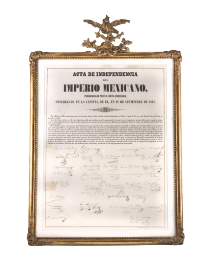
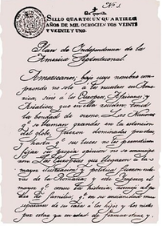
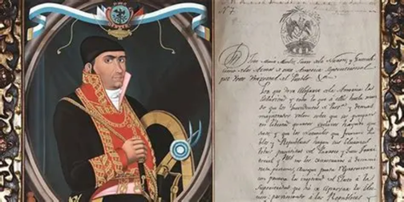

Acta de Independencia del Imperio Mexicano
El Acta de Independencia, redactada el 28 de septiembre de 1821 por Juan José Espinosa de los Monteros, es el documento mediante el cual México declaró su independencia de España. Originalmente se hicieron dos ejemplares; uno se destruyó en 1909 y el otro fue recuperado y finalmente entregado al presidente Adolfo López Mateos en 1961. Actualmente se conserva en el Archivo General de la Nación y mide 52.9 por 71.8 centímetros.


Plan de Iguala (1821)
Este plan estableció las bases para la independencia, incluyendo la creación del Ejército Trigarante, la protección de la religión católica y la independencia bajo la tutela de la Corona española. Fue un documento clave que permitió la unión de insurgentes y realistas moderados para consumar la independencia.
Documentos de los insurgentes
Cartas, proclamas y periódicos como El Despertador Americano reflejan la organización y difusión de la rebelión iniciada por el cura Hidalgo, Ignacio Allende y Juan Aldama desde 1810. Estos documentos muestran la estrategia militar, la movilización de tropas y la comunicación con aliados externos.
